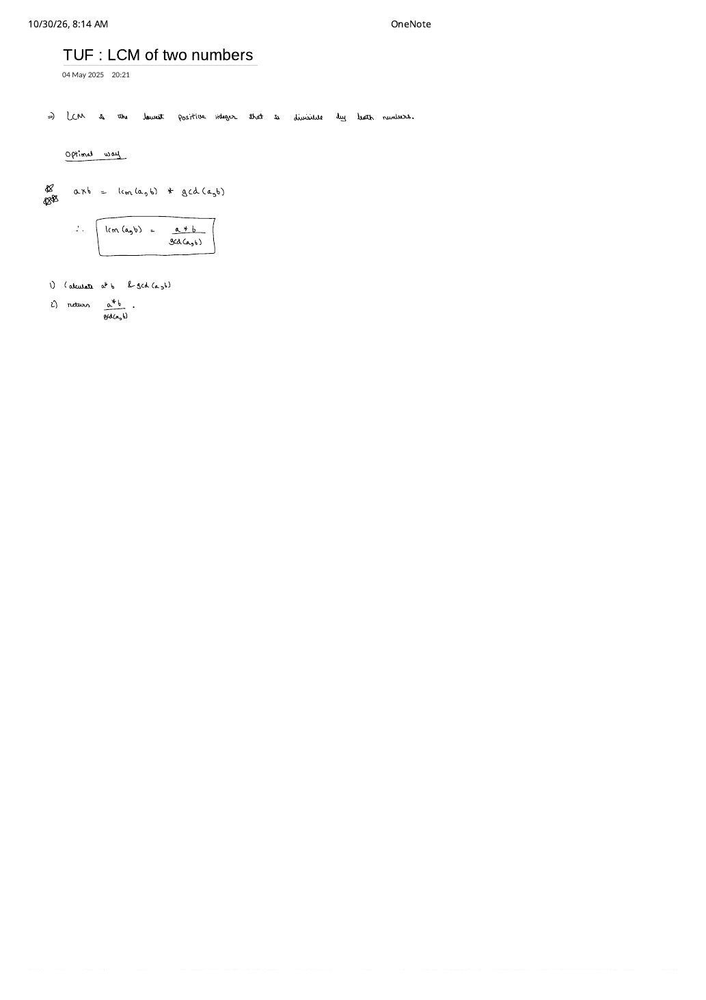

LCM of Two Numbers: The GCD Product Identity & Divide-Before-Multiply Safety
Expanded from handwritten competitive coding study note: 04_TUF_LCM_of_two_numbers.pdf
1. Problem Statement & Core Definition
Given two positive integers $a$ and $b$, compute their Least Common Multiple (LCM): the lowest positive integer $m$ that is simultaneously divisible by both $a$ and $b$ ($a \mid m$ and $b \mid m$). By convention in C++17 std::lcm, if either $a = 0$ or $b = 0$, $\operatorname{lcm}(a, b) = 0$.
2. Brute $\to$ Better $\to$ Optimal Progression
- Brute Force — Unit-Step Scan ($\mathcal{O}(a \cdot b)$): Every common multiple is at least $\max(a, b)$ and at most $a \cdot b$. Scanning $m = \max(a, b), \max(a, b) + 1, \dots, a \cdot b$ until
m % a == 0 && m % b == 0takes up to $a \cdot b \approx 10^{18}$ iterations for $10^9$-scale inputs! - Better — Stepping by Multiples of $\max(a, b)$ ($\mathcal{O}(\min(a, b))$): Let $M = \max(a, b)$ and $m = \min(a, b)$. Only multiples $M, 2M, 3M, \dots$ can be divisible by $M$! Testing
(k * M) % m == 0for $k = 1, 2, \dots$ runs $m / \gcd(a, b)$ steps—which is still $\mathcal{O}(\min(a, b)) \approx 10^9$ whenever $a$ and $b$ are coprime (e.g., $\operatorname{lcm}(10^9, 10^9 - 1)$)! - Optimal — The GCD–LCM Product Identity ($\mathcal{O}(\log(\min(a, b)))$): As boxed in
04_TUF_LCM_of_two_numbers.pdf, computing $\gcd(a, b)$ via Euclid's algorithm gives $\operatorname{lcm}(a, b)$ in a single division and multiplication!
Boxed Identity from 04_TUF_LCM_of_two_numbers.pdf & Why It Holds
Prime-Exponent Proof: Write $a = \prod_p p^{e_p}$ and $b = \prod_p p^{f_p}$. A number divides both iff each prime exponent is $\le \min(e_p, f_p)$, and is a multiple of both iff each prime exponent is $\ge \max(e_p, f_p)$. Because $\min(e_p, f_p) + \max(e_p, f_p) = e_p + f_p$ for every prime $p$:
3. Two Classic Contest Pitfalls (Overflow & $N \ge 3$ Arrays)
Pitfall 1: Never Write (a * b) / gcd(a, b) — Always Divide First!
Although $\frac{a \times b}{\gcd(a, b)}$ and $\left(\frac{a}{\gcd(a, b)}\right) \times b$ are algebraically equal over $\mathbb{R}$, fixed-width integer arithmetic evaluates a * b before dividing! Suppose $a = b = 10^{12}$ ($\gcd = 10^{12}$, true $\operatorname{lcm} = 10^{12}$):
(a * b) / gcd(a, b)computes $10^{24}$, overflowing 64-bit signedlong long($\approx 9.22 \times 10^{18}$) into undefined behavior!- Because $\gcd(a, b) \mid a$ is guaranteed to be an exact integer division with remainder $0$,
(a / gcd(a, b)) * bcomputes $1 \times 10^{12} = 10^{12}$ with zero intermediate overflow whenever the final LCM itself fits in 64 bits!
Pitfall 2: For $N \ge 3$ Numbers, Fold Pairwise — Do NOT Divide Total Product by Total GCD!
Test $A = [2, 2, 2]$: $\operatorname{lcm}(2, 2, 2) = 2$ and $\gcd(2, 2, 2) = 2$, yet $\frac{2 \times 2 \times 2}{\gcd(2, 2, 2)} = \frac{8}{2} = 4 \neq 2$! Instead, rely on associativity:
4. Clean C++ Implementation
// LCM of Two Numbers — Overflow-Safe O(log(min(a, b))) Time, O(1) Space
#include <cstdlib>
#include <numeric> // std::gcd, std::lcm in C++17+
#include <vector>
using namespace std;
class Solution {
long long gcd(long long a, long long b) {
while (b != 0) {
a %= b;
swap(a, b);
}
return a;
}
public:
long long LCM(long long a, long long b) {
if (a == 0 || b == 0) return 0;
a = llabs(a);
b = llabs(b);
return (a / gcd(a, b)) * b; // Exact division BEFORE multiplication!
}
// Extending safely to an array of positive integers
long long arrayLCM(const vector<long long>& nums) {
long long ans = 1;
for (long long x : nums) {
ans = LCM(ans, x);
}
return ans;
}
};5. Complexity Proof & Key Edge Cases
- Time Complexity — $\mathcal{O}(\log(\min(a, b)))$: Dominated by a single Euclidean $\gcd(a, b)$ call, plus one integer division and one multiplication ($\mathcal{O}(1)$).
- Space Complexity — $\mathcal{O}(1)$: Constant register space with iterative $\gcd$.
- Key Edge Cases:
- Zero argument ($a = 0$ or $b = 0$): Guard
if (a == 0 || b == 0) return 0;up front so $\operatorname{lcm}(0, 0)$ never attempts $0 / \gcd(0, 0) = 0 / 0$ division by zero! - Coprime large inputs ($a = 10^9$, $b = 10^9 - 1$): $\gcd = 1$, returning $10^9(10^9 - 1) \approx 10^{18}$ in
long long(would overflow 32-bitint!). - Equal inputs ($a = b = k$): $(k / k) \times k = k$.
- Zero argument ($a = 0$ or $b = 0$): Guard
From the Handwritten Notes
View original handwritten page — 04_TUF_LCM_of_two_numbers.pdf (Product identity a * b = lcm(a,b) * gcd(a,b))


04_TUF_LCM_of_two_numbers.pdf: Defining LCM as the lowest positive integer divisible by both numbers and boxing $\operatorname{lcm}(a, b) = \frac{a \cdot b}{\gcd(a, b)}$.